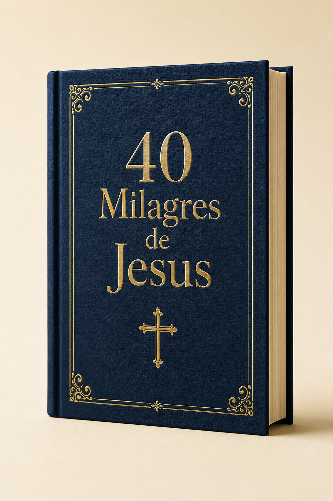

Contexto
Entenda cada milagre.
UMA JORNADA PELOS EVANGELHOS
mas será que conhece a mensagem por trás de cada um?
Descubra a mensagem por trás de cada milagre e fortaleça sua fé.
QUERO DESCOBRIR OS MILAGRES ✓ Acesso imediato • ✓ Compra 100% seguraNÃO É APENAS SOBRE O QUE ACONTECEU
Cada milagre revela uma mensagem de fé, compaixão e propósito para a sua vida hoje.
UM CONTEÚDO PARA LER, REFLETIR E VIVER
Entenda cada milagre.
Veja além da história.
Renove sua esperança.
Aplique na sua vida.

CONHECIMENTO QUE APROXIMA
Um guia visual, claro e organizado para aprofundar sua caminhada espiritual.

HÁ MAIS EM CADA PASSAGEM
RECEBA TAMBÉM
FEITO PARA QUEM BUSCA MAIS
EXPERIÊNCIAS DE QUEM JÁ LEU
“Leve, profundo e transformador. A leitura ficou muito fácil de acompanhar.”
Maria A.“Voltei a ter vontade de ler a Bíblia e entender cada passagem.”
Ana P.“As explicações são claras e me ajudaram muito no meu momento devocional.”
Carlos R.“Um material bonito, organizado e perfeito para compartilhar com a família.”
Lúcia M.RISCO ZERO
Se o conteúdo não fizer sentido para você, basta solicitar o reembolso dentro do prazo.
AINDA TEM DÚVIDAS?
O acesso ao e-book e aos bônus é liberado digitalmente após a confirmação do pagamento.
Sim. O material foi preparado para leitura no celular, tablet e computador.
Sim. Você paga uma única vez e não há mensalidade.
Sim. Você conta com uma garantia incondicional de 7 dias.